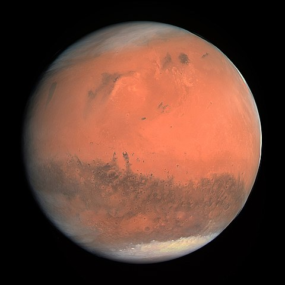
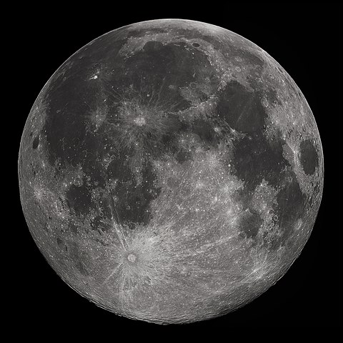
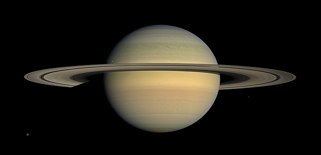

Mars
Mars merupakan planet ke empat dari matahari serta
planet terkecil ke dua setelah merkurius. Mars merupakan tetangga Bumi dengan ciri penampakan berwarna merah,
planet ini dapat dilihat pada saat matahari akan terbit, ataupun sesaat setelah matahari tenggelam. seperti Bulan, planet Mars juga memantulkan cahaya matahari, sehingga penampakannya dari Bumi tidak
selalu bundar penuh karena memiliki fase tergantung posisinya terhadap bumi dan matahari, namun karena
orbitnya dari matahari lebih besar dari orbit bumi, maka planet tidak memiliki fase sabit seperti Bulan.
Satelit
Planet Mars memiliki dua satelit alami yang relatif lebih kecil dibandingkan satelit
planet Bumi (Bulan)
yaitu
Phobos dengan diameter sekitar 22 km, serta Deimos dengan diameter sekitar 12 km.
Dari permukaan Mars, pergerakan Phobos dan Deimos kelihatan berbeda dibandingkan gerakan bulan di bumi,
Phobos
terbit di sebelah barat dan tenggelam di timur dan terbit lagi dalam waktu 11 jam kemudian, sedangkan Deimos
hanya berada sedikit diluar orbit sinkronus, yaitu orbit yang periodenya sama dengan rotasi planet, sehingga
Deimos bergerak perlahan terbit dari sebelah timur.
Orbit dan Rotasi
Jarak rata-rata
planet Mars dari Matahari adalah sekitar 230.000.000 km, serta periode orbitalnya adalah 687 hari bumi. satu
hari di Mars sedikit lebih panjang daripada di bumi yaitu 24 jam, 39 menit dan 35,244 detik sedangkan satu
tahun di Mars setara dengan 1,8809 tahun Bumi, yaitu 1 tahun bumi ditambah 320 hari bumi dan 18,2 jam
Kemiringan sumbu rotasi Mars adalah 25.19° terhadap bidang orbitalnya, yang mana sama dengan kemiringan
sumbu
rotasi Bumi, sehingga berakibat Mars juga memiliki musim seperti Bumi
selengkapnya...
Bulan

Bulan merupakan satu-satunya satelit alami planet Bumi, Bulan bersama Bumi membentuk sistem satelit
Bumi-Bulan. Ukuran diameter Bulan itu sendiri kira-kira seperempat dari diameter Bumi (kira-kira selebar benua
Australia), Bulan merupakan satelit alami terbesar ke lima di tata surya, bahkan lebih besar dibandingkan
beberapa planet minor.
Mengorbit Bumi pada jarak rata-rata 384.400 km (238.900 mil), atau kira-kira 30 kali diameter Bumi. Pengaruh
gravitasinya memperlambat rotasi bumi secara perlahan, serta juga berpengaruh terhadap peristiwa pasang surut
di Bumi.
Ukuran dan Massa
Diameter Bulan adalah sekitar 3.500 km dengan luas total permukaan bulan adalah sebesar 38 juta kilometer
persegi, sedikit lebih kecil dibandingkan dengan luas amerika utara dan selatan
Massa Bulan sekitar 1/81 massa Bumi, ini menjadikannya satelit dengan gravitasi permukaan terbesar kedua
setelah io, yaitu 0,1654 g dan dengan kelajuan lepas sebesar 2,38 m/s (8600 km/jam)
Kondisi Permukaan
Permukaan Bulan merupakan lingkungan yang sangat ekstrim, dengan temperatur berkisar antara -171°C sampai
140°C serta dengan tekanan atmosfer 10-10Pa
selengkapnya...
Saturnus

Saturnus merupakan planet ke enam dari matahari, serta juga merupakan planet terbesar ke dua di sistem surya
setelah Jupiter, planet ini merupakan kategori planet gas raksasa dengan radius rata-rata sekitar sembilan
setengah kali radius Bumi. Saturnus memiliki densitas rata-rata satu per delapan kali densitas rata-rata Bumi,
meskipun densitasnya lebih kecil dari Bumi dengan volumenya yang besar Saturnus sembilan puluh lima kali lebih
massif dari Bumi.
Menurut para ahli, planet gas raksasa ini sebagian besar terdiri dari gas hidrogen dan helium serta tidak
dapat ditentukan secara pasti apakah memiliki permukaan, meskipun sepertinya planet ini memiliki inti berwujud
padat
selengkapnya...